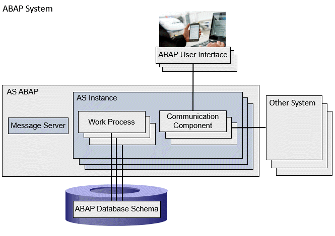

ABAP programs are executed on the Application Server ABAP (AS ABAP) of an
ABAP system. The following figure shows a simplified representation of the AS ABAP as part of an ABAP system.

The AS ABAP represents the application layer of the ABAP system. The AS ABAP is identified by a
system ID, which is also the name of the entire ABAP system. Users can log on to the AS ABAP using a
user name. The most important components of an AS ABAP for ABAP program execution are:
AS Instance
The ABAP program execution itself takes place in
AS Instances (application server instances). One or more AS Instances can be instantiated for an AS ABAP. Multiple AS Instances are usually distributed across several
host computers. The AS Instances communicate with each other using a
message server (exactly one for each AS ABAP).
The communication components connect the AS Instances with the
presentation layer of the
ABAP system, or with other
systems, which can be either another AS ABAP or external systems. The following are examples of communication components: